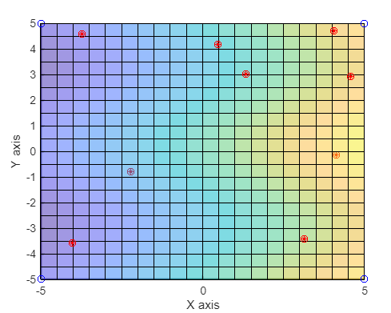

Numerical Mathematics
GitHub
The code for this project can be found here
Report 2: Interpolation and decomposition
Report 3: Length along the curve and maxima/minima
Report 4: ODE and PDE
Report 1: Finding the root
-
Visualize the function with Matlab

x = 0:0.3:20; y = log10(x)+cos(x)-1; plot(x,y,'r-o') title('f(x) = log(x)+cos(x)-1'), xlabel('value of x') ylabel('value of y') grid on -
Calculate the root using the integrated "fzero" function
r1_fzero = fzero(f,6); r2_fzero = fzero(f,8); r3_fzero = fzero(f,10); -
Calculate the root using the "Bisection" method
x1_bisection = 1; x2_bisection = 6; epsilon = 1e-7; minTime = Inf; if f(x1_bisection)*f(x2_bisection)>0 disp('This is not possible') else r_bisection = 1; err = 1; i_bisection = 0; while err > epsilon t_bisection = tic; i_bisection = i_bisection+1; if f(x1_bisection)*f(r_bisection)<0 x2_bisection = r_bisection; else x1_bisection = r_bisection; end r_bisection = (x1_bisection + x2_bisection)/2; err = abs(f(r_bisection)); end end t_bisection_end = toc(t_bisection); -
Calculate the root using the "False Position" method
x1_false = 1; x2_false = 6; if f(x1_false)*f(x2_false)>0 disp('This is not possible') else r_false = 1; error = abs(f(r_false)); i_false = 0; while error > epsilon t_false = tic; i_false = i_false + 1; if f(x1_false)*f(r_false)<0 x2_false = r_false; else x1_false = r_false; end r_false = x1_false-((x2_false - x1_false)*f(x1_false))/(f(x2_false)-f(x1_false)); error = abs(f(r_false)); end end t_false_end = toc(t_false); -
Calculate the root using the "Secant" method
x0_secant = 2; x1_secant = 6; x2_secant = 1; r_secant = 1; i_secant = 0; while r_secant > epsilon t_secant = tic; i_secant = i_secant +1; x2_secant=x1_secant-f(x1_secant).*((x1_secant-x0_secant)/(f(x1_secant)-f(x0_secant))); x0_secant = x1_secant; x1_secant = x2_secant; r_secant = abs(f(x2_secant)); s_secant = x2_secant; end t_secant_end = toc(t_secant); -
Calculate the root using the "Newton-Raphson" method
df =@(x) 1/(x*log(10)) - sin(x); x_newton = 6; %dif =@(x_newton) diff(f2); r_newton = 1; i_newton = 0; while r_newton > epsilon t_newton = tic; i_newton = i_newton + 1; x1_newton=x_newton-f(x_newton)/df(x_newton); x_newton = x1_newton; r_newton = abs(f(x1_newton)); s_newton = x1_newton; end t_newton_end = toc(t_newton); -
Compare the root finding methods
Number of iterations with "Bisection method" is: 25 Number of iterations with "False Position method" is: 6 Number of iterations with "Secant method" is: 6 Number of iterations with "Newton-Raphson" is: 5 -
Compare the root finding methods to the integrated fzero function
The diference with "fzero" and "Bisection method" is: 0.0000000264 The diference with "fzero" and "False Position method" is: 0.0000000008 The diference with "fzero" and "Secant method" is: 0.00000000000418 The diference with "fzero" and "Newton-Raphson method" is: 0.0000000013 -
Visualize using a table to compare the results
| Row | Root | Iterations | Diference | Time |
|---|---|---|---|---|
| Bisection | 5.0166 | 25 | 2.6443e-08 | 8.6000e-04 |
| False Position | 5.0166 | 6 | 8.0643e-10 | 8.1200e-04 |
| Secant | 5.0166 | 6 | 4.1771e-12 | 8.1700e-04 |
| Newton-Raphson | 5.0166 | 5 | 1.2582e-09 | 0.0018 |
Report 2: Interpolation and decomposition
-
Bilinear interpolation
-
We using the ’bilinear interpolation method’ to interpolate points in the domain \([−5, 5]×[−5, 5]\) using the function \(f(x, y) = x + cos(y) − 1\) respectively: \(f(−5, −5), f(5, −5), f(5, 5) and f(−5, 5)\).
For the 1 point: x1: 3.15 x2: -3.42 y: 2.43function P = bilinear(x,y) x1 = -5; x2 = 5; y1 = -5; y2 = 5; f =@(x,y) x+cos(y)-1; Q11 = f(x1,y1); Q12 = f(x1,y2); Q21 = f(x2,y1); Q22 = f(x2,y2); R1 = ((x2 - x)/(x2 - x1))*Q11 + ((x - x1)/(x2 - x1))*Q21; R2 = ((x2 - x)/(x2 - x1))*Q12 + ((x - x1)/(x2 - x1))*Q22; P = ((y2 - y)/(y2 - y1))*R1 + ((y - y1)/(y2 - y1))*R2; end
For the 2 point: x1: 4.06 x2: 4.71 y: 3.34
For the 3 point: x1: -3.73 x2: 4.57 y: -4.45
For the 4 point: x1: 4.13 x2: -0.15 y: 3.42
For the 5 point: x1: 1.32 x2: 3.00 y: 0.61
For the 6 point: x1: -4.02 x2: -3.58 y: -4.74
For the 7 point: x1: -2.22 x2: -0.78 y: -2.93
For the 8 point: x1: 0.47 x2: 4.16 y: -0.25
For the 9 point: x1: 4.58 x2: 2.92 y: 3.86 -
Interpolate
x1 = -5; x2 = 5; y1 = -5; y2 = 5; f=@(x,y) x+cos(y)-1; Q11 = f(x1,y1); Q12 = f(x1,y2); Q21 = f(x2,y1); Q22 = f(x2,y2); a = -5; b = 5; rr = (b-a).*rand(10,2) + a; r = [(rr(:,1)),(rr(:,2))]; for i = 1:9 P = bilinear(r(i,1),r(i,2)); plot3(r(i,1),r(i,2),P,'or') %Plot the interpolated points end -
Compare the interpolated values with the exact values given by \(f(x, y) = x + cos(y) − 1\) and summarize the results.
For the \(1^{st}\) point: 1.24for i = 1:9 fy = f((r(i,1)),(r(i,2))); P = bilinear(r(i,1),r(i,2)); result = fy - P; result = abs(result); end
For the \(2^{nd}\) point: 0.29
For the \(3^{rd}\) point: 0.42
For the \(4^{th}\) point: 0.71
For the \(5^{th}\) point: 1.27
For the \(6^{th}\) point: 1.19
For the \(7^{th}\) point: 0.43
For the \(8^{th}\) point: 0.81
For the \(9^{th}\) point: 1.26 -
Visualizeing the function and the interpolated values.

-
-
QR decomposition
- Write a Matlab code to calculate the QR decomposition of a real 5x5 matrix using the Gram–Schmidt process.
function [Q,R] =gschmidt(V) [m,n]=size(V); R=zeros(n); R(1,1)=norm(V(:,1)); Q(:,1)=V(:,1)/R(1,1); for k =2:n R(1:k-1,k)=Q(:,1:k-1)'*V(:,k); Q(:,k)=V(:,k)-Q(:,1:k-1)*R(1:k-1,k); R(k,k)=norm(Q(:,k)) Q(:,k)=Q(:,k)/R(k,k) end end - Define an orthogonal matrix Q and an upper triangular matrix \(R\) with \(A = Q · R\) to test your program.
A = rand(5); [W,U] = qr(A); B_nomral = W*U [Q,R] = gschmidt(A); B_qr = Q*R - Extend the code to solve the system \(A· x = b\), where b needs to be set accordingly, and compare the result with the built in Matlab function A \ b. ```matlab x = rand(5,1);
b=A\x; inv(A)\b;
- Write a Matlab code to calculate the QR decomposition of a real 5x5 matrix using the Gram–Schmidt process.
Report 3: Differentiation and integration
-
The length along a curve \(y = y(x)\) from \(x = a\) to \(x = b\) is given by the expression
$$ S = \int_{x=a}^{b} \sqrt{1 + (\dfrac{dx}{dy})^{2} dx.} $$ In most cases this expression cannot be determined analytically. Calculating the given expression numerically for an arbitrary smooth function in the interval \([a, b]\).
Differentiate the function using the forward difference scheme
Define the way to calculate the length along the curvedFun = @(x) Fun(x+h)-Fun(x-h)/2*h;
Use the function Gauss_quad to integrate numericallyS =@(x) sqrt(1 + dFun(x).^2);
Define the derivative of the functionGQ = Gauss_quad(S,1,2);Calculate the length of te curve with the derivativedFun2 = @(x) x.^2/2 - 1./(2*x.^2);
Integrated functionS2 =@(x) sqrt(1 + dFun2(x).^2);Now we calculate the difference between our function and the integrated oneinte = integral(S2,1,2);
The difference between the integrated function and our iteration is: 3.339997e-02 or 97.70 percentdifference = GQ - inte; -
Finding the local extreme values of a function
The extreme values of a function \(y = y(x)\) are given by \(y_0(x) = 0\). However, it has to be checked through the second derivative, if an extreme value is a minima or a maxima. Differentiate the function using the forward difference schemeThen we check if we have a minima or maxima:dy_hd = @(x) y(x+h)-2*y(x)+y(x-h)./h^2;minima = []; maxima = []; for i = 1:length(variable) if dy_hd(variable(i))>0 sol = variable(i); minima =[minima,sol]; end if dy_hd(variable(i))<0 sol1 = variable(i); maxima = [maxima,sol1]; end end